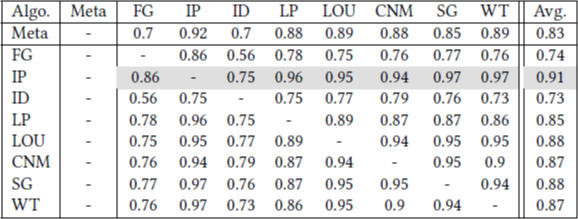
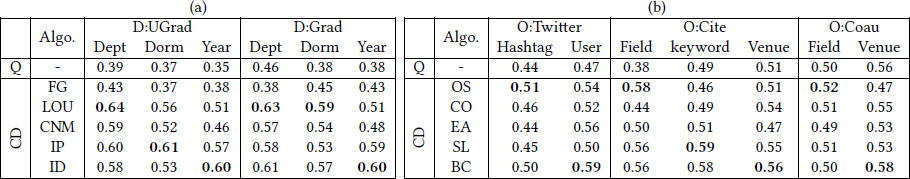

This is a web copy of https://doi.org/10.1145/3184558.3186921 Published in WWW2018 Proceedings © 2018 International World Wide Web Conference Committee, published under Creative Commons CC By 4.0 License. The modifications from the original are solely to improve HTML aiming to make it Findable, Accessible, Interoperable and Reusable. augmenting HTML metadata and avoiding ACM trademark. To reference this HTML version, use:
Permalink: https://w3id.org/oa/10.1145/3184558.3186921
DOI: https://doi.org/10.1145/3184558.3186921
WWW '18: Proceedings of The Web Conference 2018, Lyon, France, April 2018
A community detection (CD) method is usually evaluated by what extent it is able to discover the ‘ground-truth’ community structure of a network. A certain ‘node-centric metadata’ is used to define the ground-truth partition. However, nodes in real networks often have multiple metadata types (e.g., occupation, location); each can potentially form a ground-truth partition. Our experiment with 10 CD methods on 5 datasets (having multiple metadata-based ground-truth partitions) show that the metadata-based evaluation is misleading because there is no single CD method that can outperform others by detecting all types of metadata-based partitions. We further show that the community structure obtained from the CD methods is usually topologically stronger than any metadata-based partitions. Finally, we suggest a new task-based evaluation framework for CD methods and show that a certain type of CD methods is useful for a certain type of task.
CCS Concepts: • Information systems → Clustering; • Mathematics of computing → Graph algorithms;
ACM Reference Format:
Tanmoy Chakraborty, Zhe Cui, and Noseong Park. 2018. Metadata vs. Ground-truth: A Myth behind the Evolution of Community Detection Methods. In WWW '18 Companion: The 2018 Web Conference Companion, April 23–27, 2018, Lyon, France. ACM, New York, NY, USA 2 Pages. https://doi.org/10.1145/3184558.3186921
Community detection is a fundamental task in network analysis. Most popular way of evaluating these methods is to assess their ability to identify so-called ‘ground-truth’ partition. For artificially generated networks, the ground-truth communities are planted manually based on the network generation process. However, for real networks the network generation process is unknown. Therefore, the standard practice is to treat some observed node-centric features, aka metadata (e.g., product category, person's affiliation) to generate the ground-truth. While this widespread practice is convenient, it can lead to incorrect assessment under relatively common circumstances. For example, Football network [2], a widely used network, represents the games played between American College Football teams in one season. Also provided are the conference membership of each team, acting as metadata-based ground-truth. Teams play more games against teams from the their own conference than from any one other conference. In fact, this data is so well-clustered that any CD method should detect the clusters correctly. However, while running 8 popular disjoint CD methods (see Table 2), we observe that most of the CD methods return a partition which agrees more with the partition obtained from Infomap (IP) [1], a popular CD method, than the metadata-based ground-truth in terms of Normalized Mutual Information (NMI). Although both the partitions contain 12 communities, the constituent nodes in the communities are different. This illustrates the ambiguous status of the metadata as a desirable target [4] in the communty detection algorithms.
|  |
Most real-world networks have many good metadata-based partitions. In this paper, we collect five such networks, each having different metadata-based ground-truth partitions. We experiment with 10 state-of-the-art CD methods and observe that given a particular network, a CD method which performs good for a certain ground-truth may not perform as good for other ground-truth. We therefore argue against treating metadata as ground-truth and suggest that a CD method should be judged by the task-based evaluation. At the end, we demonstrate through three tasks (missing like prediction, message spreading and worm containment) that certain CD methods are good at certain task and suggest that one should target a particular application while designing a CD method rather than aiming to discover the metadata-based partition.
Datasets: We consider five networks, first two having disjoint (D) and remaining having overlapping (O) communities: (i) Undergraduate student friendship network (D:UGrad): |V| = 1220, |E| = 43208, and communities are ‘Department’, ‘Dormitory’, and ‘Year’; (ii) Graduate student friendship network (D:Grad): |V| = 820, |E| = 23, 183, and communities are same as UGrad; (iii) Twitter follower-followee network (O:Twitter): |V| = 81, 306, |E| = 1, 768, 149, and communities are ‘hashtag’, and ‘user-type’ (e.g., politician, actor etc.); (iv) Paper-paper citation network (O:Cite): |V| = 103677, |E| = 352, 183, and communities are ‘research fields’ (e.g., AI, NLP), ‘keywords’, and ‘publication venues’. (v) Author-author co-authorship network (O:Coau): |V| = 86, 754, |E| = 134, 293, and communities are same ‘research fields’ and ‘publication venues’. As we shown in Table 2 (first row), these ground-truth partitions are not random (their modularity scores [2] are at least 0.35).
CD methods: (i) Disjoint CD methods [1]: FastGreedy (FG), Louvain (LOU), CNM, Infomap (IP), Infomod (ID); (ii) Overlapping CD methods [6]: OSLOM (OS), COPRA (CO), EAGLE (EA), SLPA (SL), BIGCLAM (BC) 1.
We run all CD methods on different networks and detect community structures. Then we compare the detected community structures with each ground-truth partition separately. Table 2 shows that there is no single winner across different ground-truth partitions for a particular network. In case of UGrad and Grad networks, while Louvain accurately captures department-based partition, Infomod detects the year-based partition better. Sometimes, Infomap or Louvain outperform others in capturing dormitory-based partition. Similar trend is observed in case of overlapping community detection where OSLOM (resp. BIGCLAM) accurately detects hashtag-based (resp. user-based) partition in Twitter network and field-based (resp. venue-based) partition in citation and co-authorship networks. From these result, we argue that the considering metadata as ground-truth might lead to incorrect conclusion about the accuracy of the CD methods, and therefore we suggest a task-based evaluation framework.
|  |
| Algo. | D:UGrad | D:Grad | O:Twitter | O:Cite | O:Coau |
| FG | 0.34, 0.89, 0.45 | 0.47, 0.84, 0.38 | 0.43, 0.73, 0.65 | 0.39, 0.69, 0.54 | 0.47, 0.82, 0.62 |
| LOU | 0.45, 0.56, 0.32 | 0.56, 0.51, 0.43 | 0.41, 0.59, 0.54 | 0.46, 0.47, 0.55 | 0.49, 0.36, 0.43 |
| CNM | 0.43, 1.00, 0.36 | 0.54, 0.89, 0.39 | 0.46, 0.94, 0.45 | 0.44, 0.82, 0.43 | 0.45, 0.81, 0.37 |
| IP | 0.49, 0.78, 0.14 | 0.59, 1.00, 0.18 | 0.51, 0.93, 0.22 | 0.51, 0.98, 0.21 | 0.54, 0.83, 0.34 |
| ID | 0.51, 0.69, 0.23 | 0.54, 0.74, 0.22 | 0.50, 0.80, 0.19 | 0.51, 0.76, 0.20 | 0.50, 0.69, 0.21 |
| OS | 0.42, 0.76, 0.28 | 0.47, 0.84, 0.32 | 0.48, 1.00, 0.35 | 0.57, 1.00, 0.43 | 0.55, 1.00, 0.32 |
| CO | 0.38, 0.78, 0.54 | 0.39, 0.79, 0.42 | 0.44, 0.94, 0.67 | 0.59, 0.87, 0.43 | 0.58, 0.82, 0.43 |
| EA | 0.50, 0.76, 0.36 | 0.48, 0.83, 0.39 | 0.46, 0.72, 0.43 | 0.56, 0.71, 0.48 | 0.60, 0.88, 0.42 |
| SL | 0.59, 0.87, 0.43 | 0.56, 0.69, 0.54 | 0.55, 0.66, 0.53 | 0.63, 0.60, 0.46 | 0.54, 0.64, 0.39 |
| BC | 0.55, 0.68, 0.53 | 0.61, 0.78, 0.59 | 0.60 , 0.71, 0.43 | 0.64, 0.85, 0.61 | 0.59, 0.62, 0.48 |
We prescribe that a CD method should be task-dependent, i.e., while designing a CD method, one should focus how it helps in enhancing a particular application. To this end, we consider three applications mentioned below and compare the performance of the CD methods.
(i) Missing Link Prediction (MLP): Predicting the missing links aims at recovering the unobserved links which are missing in the observed network due to several reasons such as crawling error, security constraints etc. [5] proposed a technique that combines structur with community information for predicting the existence of missing links. We utilize their approach with the community information provided separately by each competing CD method and check which method leads to highest accuracy in this task. In every iteration, we randomly delete 20% edges from a network and try to predict those edges. The average accuracy (in terms of AUC) is reported in Table 3 (red font) after 50 such iterations. We observe almost a consistent trend across different datasets (except UGrad) that using the community information obtained from BIGCLAM (BG) enhances the accuracy of MLP method to its maximum extent.
(ii) Message Spreading: Message spreading based on the discovery of network community structures has provided significant enhancement over traditional methods. We adopt the algorithm proposed in [3]– given a network and its community structure, it delivers packets to all vertices in the network. In particular, a total of 1000 messages are created and uniformly distributed during the experiment duration. The accuracy is measured using average delivery time, i.e., average time for a message to be delivered to all the vertices (the lower, the better). The average of the delivery time is reported after 50 repetition. Table 3 (blue font) shows the relative average time w.r.t. the maximum time. Here we observe Louvain (LOU) to be the clear winner irrespective of any dataset.
(iii) Worm Containment in Social Networks: Social networks are productive platform for the malicious software to propagate fast. [3] proposed an approach that takes into account the community structure as well as the dynamics of social networks for worm containment. We follow their patch distribution strategy (with the default parameter setting) and use the community structure obtained from each CD method. We compare infection rate (i.e., computed as the fraction of the remaining infected users over all infected ones; the lower the better) of the approach with different community structure. The experiment is repeated 50 times and the average infection rate is mentioned in Table 3 (black font). We observe that two information theoretic methods – Infomap (IP) and Infomod (ID) outperform others in this task.
We argued that treating vertex metadata as ground-truth partition for real-networks is misleading as most real networks typically possess multiple types of metadata, and one should not expect that a CD method can detect all types of metadata-based ground-truth partitions from a network. We suggested a task-based evaluation framework for CD methods.
The work was partially supported by the Ramanujan Fellowship, SERB-DST, Govt. of India.
This paper is published under the Creative Commons Attribution 4.0 International (CC-BY 4.0) license. Authors reserve their rights to disseminate the work on their personal and corporate Web sites with the appropriate attribution.
WWW '18, April 23-27, 2018, Lyon, France
© 2018; IW3C2 (International World Wide Web Conference Committee), published under Creative Commons CC-BY 4.0 License. ACM ISBN 978-1-4503-5640-4/18/04.
DOI: https://doi.org/10.1145/3184558.3186921